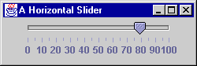

QUESTION 2:

What type of listener responds to a ChangeEvent?
The add() method, as with any component.
JSlider.The pictures show a variety of sliders. Sliders may be oriented horizontally or vertically. The tick marks and labels are part of the display of the component. The display of each is an option that can be turned on or off.

The user adjusts the value by clicking on the knob and dragging it.
As the user drags the knob
ChangeEvents are generated.
What type of listener responds to a ChangeEvent?